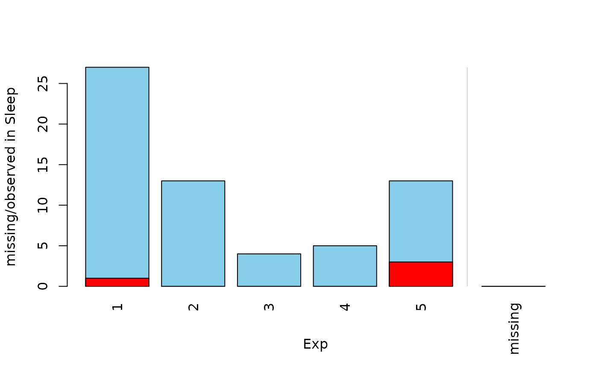
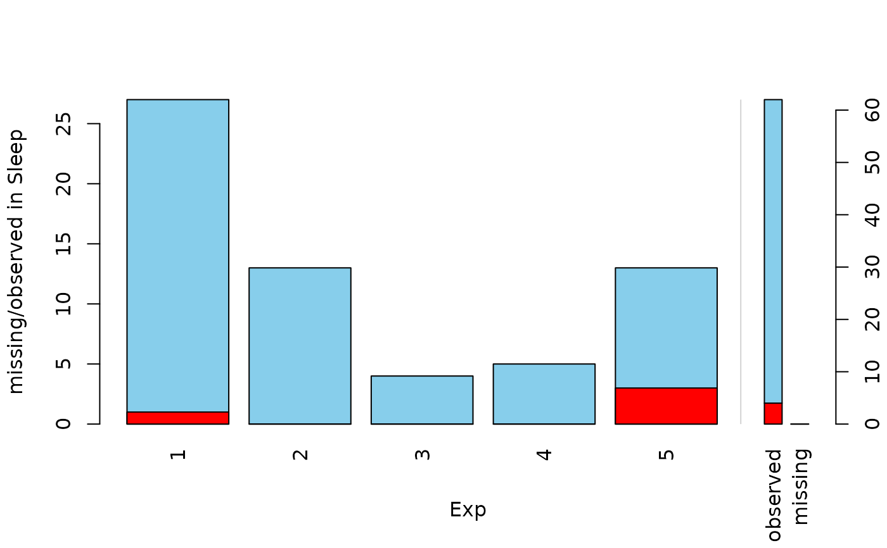

Barplot with highlighting of missing/imputed values in other variables by splitting each bar into two parts. Additionally, information about missing/imputed values in the variable of interest is shown on the right hand side.
barMiss( x, delimiter = NULL, pos = 1, selection = c("any", "all"), col = c("skyblue", "red", "skyblue4", "red4", "orange", "orange4"), border = NULL, main = NULL, sub = NULL, xlab = NULL, ylab = NULL, axes = TRUE, labels = axes, only.miss = TRUE, miss.labels = axes, interactive = TRUE, ... )
Arguments
| x | a vector, matrix or |
|---|---|
| delimiter | a character-vector to distinguish between variables and
imputation-indices for imputed variables (therefore, |
| pos | a numeric value giving the index of the variable of interest.
Additional variables in |
| selection | the selection method for highlighting missing/imputed
values in multiple additional variables. Possible values are |
| col | a vector of length six giving the colors to be used. If only one color is supplied, the bars are transparent and the supplied color is used for highlighting missing/imputed values. Else if two colors are supplied, they are recycled. |
| border | the color to be used for the border of the bars. Use
|
| main, sub | main and sub title. |
| xlab, ylab | axis labels. |
| axes | a logical indicating whether axes should be drawn on the plot. |
| labels | either a logical indicating whether labels should be plotted below each bar, or a character vector giving the labels. |
| only.miss | logical; if |
| miss.labels | either a logical indicating whether label(s) should be plotted below the bar(s) on the right hand side, or a character string or vector giving the label(s) (see ‘Details’). |
| interactive | a logical indicating whether variables can be switched interactively (see ‘Details’). |
| ... | further graphical parameters to be passed to
|
Value
a numeric vector giving the coordinates of the midpoints of the bars.
Details
If more than one variable is supplied, the bars for the variable of interest are split according to missingness/number of imputed missings in the additional variables.
If only.miss=TRUE, the missing/imputed values in the variable of
interest are visualized by one bar on the right hand side. If additional
variables are supplied, this bar is again split into two parts according to
missingness/number of imputed missings in the additional variables.
Otherwise, a small barplot consisting of two bars is drawn on the right hand
side. The first bar corresponds to observed values in the variable of
interest and the second bar to missing/imputed values. Since these two bars
are not on the same scale as the main barplot, a second y-axis is plotted on
the right (if axes=TRUE). Each of the two bars are again split into
two parts according to missingness/number of imputed missings in the
additional variables. Note that this display does not make sense if only
one variable is supplied, therefore only.miss is ignored in that
case.
If interactive=TRUE, clicking in the left margin of the plot results
in switching to the previous variable and clicking in the right margin
results in switching to the next variable. Clicking anywhere else on the
graphics device quits the interactive session. When switching to a
continuous variable, a histogram is plotted rather than a barplot.
Note
Some of the argument names and positions have changed with version 1.3
due to extended functionality and for more consistency with other plot
functions in VIM. For back compatibility, the arguments
axisnames, names.arg and names.miss can still be
supplied to ...{} and are handled correctly. Nevertheless, they
are deprecated and no longer documented. Use labels and
miss.labels instead.
References
M. Templ, A. Alfons, P. Filzmoser (2012) Exploring incomplete data using visualization tools. Journal of Advances in Data Analysis and Classification, Online first. DOI: 10.1007/s11634-011-0102-y.
See also
spineMiss(), histMiss()
Other plotting functions:
aggr(),
histMiss(),
marginmatrix(),
marginplot(),
matrixplot(),
mosaicMiss(),
pairsVIM(),
parcoordMiss(),
pbox(),
scattJitt(),
scattMiss(),
scattmatrixMiss(),
spineMiss()
Author
Andreas Alfons, modifications to show imputed values by Bernd Prantner
Examples
barMiss(x, only.miss = FALSE)## for imputed values x_IMPUTED <- kNN(sleep[, c("Exp", "Sleep")]) barMiss(x_IMPUTED, delimiter = "_imp")barMiss(x_IMPUTED, delimiter = "_imp", only.miss = FALSE)